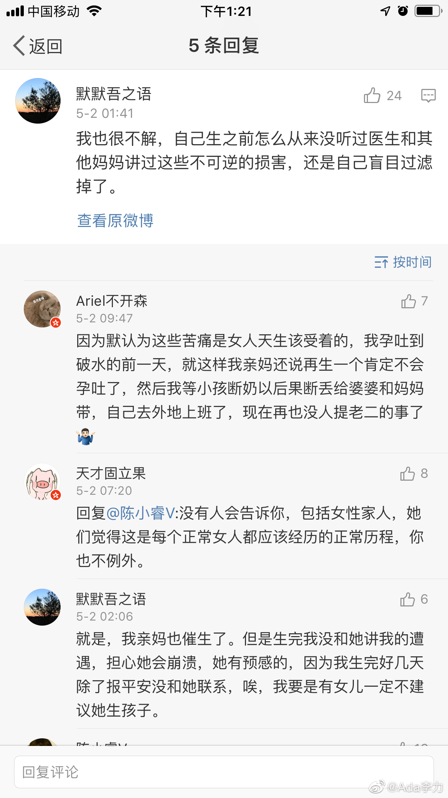

@Ada李力:
为什么没有人告诉我们这些？
@花开富贵老娘发飙 开了个帖子"让生育后的女性来谈一下生育后遗症，让还没生的知道将会发生什么。"，一天时间，评论2000+，阅读过百万。评论里，各种信息让人触目惊心，有些症状是我经历过的，已经不愿意再回想，有些我没遇到，但能感受到分享者的痛苦，无奈，和委屈。
还有不少人惊呼，为什么没有人告诉我们这些，我妈妈都没有跟我提过这些？
我妈妈生了4个孩子，三女一男，她也从来没有跟我讲过生产的这些痛苦，但我妈妈现在是什么样一个状况呢？骨质严重疏松，几次压缩性骨折，脑中风造成半身瘫痪，同龄的爸爸身体健康。而我妈妈最喜欢说的是，她当姑娘的时候身体是多么好。我印象中是妈妈包揽了家里的所有家务活，虽然她跟爸爸拿同样的工资。有时候我妈妈唯一的感叹就是说，屁股粘在凳子上坐一会儿，以及睡个觉就是很奢侈的事情。
我一直认为，我妈妈老年身体变得这么差，完全是操劳过度的结果。后来看了些医学方面的书籍，才知道生育的次数是和女性的衰老有密切关系，生育次数越多，女性衰老的速度越快。
我在想我妈妈也经历过生育的痛苦，但为什么从来没跟我们提过呢？我现在只能做这样的推论，她认为女人是必须要生孩子的。既然必须要生育，痛苦不痛苦有什么关系呢？不告诉你还能让你对这个事儿的幻觉多一些。
我妈妈当然是那种偏传统的女性。有段时间她最担心的就是我嫁不出去，她也担心像我性格倔强的女生没有男性会喜欢。我跟我先生起争执的时候，她会劝我要照顾下老公的面子。在我妈妈的眼里，女性就是第二性的，如果不能给男人生个孩子的话，女性就没有价值。如果她告诉我生育的痛苦和后遗症外，除了让我不想结婚也不想生育以外，还有什么样的其他可能性呢？这跟她一直接受的洗脑文化是冲突的。
还有一个原因，在我们的文化下，女性是羞于谈论有关自己身体的话题。像我也是都是到这个年龄，孩子上初中了，才可以很公开的谈论自己性知识是如何启蒙的，对性生活的看法，对避孕的看法。那么生产这个涉及到性器官，涉及屎尿屁的话题，让很多女性是难以启齿去谈论的。我们亲姊妹三人之间，也没有谈论过太多这方面话题。现在即使网络这么发达，我们看到关于孕期的话题还是大部分关于关于妊娠纹这种面子上的事儿，而关于漏尿关于痔疮，很少有人谈。
我就是很奇怪这点。很多人担心妊娠纹就是不能再穿比基尼之类，还有老公面前不自信这些。但是漏尿，痔疮，子宫脱垂这些关系到自己日常生活质量的更严重后遗症，却没有人讨论？！！！我们即使对于身体的反应，也表明了女性的身体，似乎都是为了让别人看的，而不是让自己用的。
这些生产和生育痛苦能跟老公讲吗？即使经历过同样的事情，都不一定能感同身受，何况是根本不会经历过你一样的过程的男性呢？你可以尝试去对男性讲讲这一系列的难堪，我保证你能得到非常多这样的建议：你太矫情了，你需要加强锻炼身体，或者你多喝点水~
最TMD的，就是很多女性也这么说：你太矫情了，生孩子不算什么事儿啊。千百年来，女人不都这么生孩子吗？
拿千百年传统来说道理的人都是脑残，傻逼。
#女性#
@花开富贵老娘发飙 开了个帖子"让生育后的女性来谈一下生育后遗症，让还没生的知道将会发生什么。"，一天时间，评论2000+，阅读过百万。评论里，各种信息让人触目惊心，有些症状是我经历过的，已经不愿意再回想，有些我没遇到，但能感受到分享者的痛苦，无奈，和委屈。
还有不少人惊呼，为什么没有人告诉我们这些，我妈妈都没有跟我提过这些？
我妈妈生了4个孩子，三女一男，她也从来没有跟我讲过生产的这些痛苦，但我妈妈现在是什么样一个状况呢？骨质严重疏松，几次压缩性骨折，脑中风造成半身瘫痪，同龄的爸爸身体健康。而我妈妈最喜欢说的是，她当姑娘的时候身体是多么好。我印象中是妈妈包揽了家里的所有家务活，虽然她跟爸爸拿同样的工资。有时候我妈妈唯一的感叹就是说，屁股粘在凳子上坐一会儿，以及睡个觉就是很奢侈的事情。
我一直认为，我妈妈老年身体变得这么差，完全是操劳过度的结果。后来看了些医学方面的书籍，才知道生育的次数是和女性的衰老有密切关系，生育次数越多，女性衰老的速度越快。
我在想我妈妈也经历过生育的痛苦，但为什么从来没跟我们提过呢？我现在只能做这样的推论，她认为女人是必须要生孩子的。既然必须要生育，痛苦不痛苦有什么关系呢？不告诉你还能让你对这个事儿的幻觉多一些。
我妈妈当然是那种偏传统的女性。有段时间她最担心的就是我嫁不出去，她也担心像我性格倔强的女生没有男性会喜欢。我跟我先生起争执的时候，她会劝我要照顾下老公的面子。在我妈妈的眼里，女性就是第二性的，如果不能给男人生个孩子的话，女性就没有价值。如果她告诉我生育的痛苦和后遗症外，除了让我不想结婚也不想生育以外，还有什么样的其他可能性呢？这跟她一直接受的洗脑文化是冲突的。
还有一个原因，在我们的文化下，女性是羞于谈论有关自己身体的话题。像我也是都是到这个年龄，孩子上初中了，才可以很公开的谈论自己性知识是如何启蒙的，对性生活的看法，对避孕的看法。那么生产这个涉及到性器官，涉及屎尿屁的话题，让很多女性是难以启齿去谈论的。我们亲姊妹三人之间，也没有谈论过太多这方面话题。现在即使网络这么发达，我们看到关于孕期的话题还是大部分关于关于妊娠纹这种面子上的事儿，而关于漏尿关于痔疮，很少有人谈。
我就是很奇怪这点。很多人担心妊娠纹就是不能再穿比基尼之类，还有老公面前不自信这些。但是漏尿，痔疮，子宫脱垂这些关系到自己日常生活质量的更严重后遗症，却没有人讨论？！！！我们即使对于身体的反应，也表明了女性的身体，似乎都是为了让别人看的，而不是让自己用的。
这些生产和生育痛苦能跟老公讲吗？即使经历过同样的事情，都不一定能感同身受，何况是根本不会经历过你一样的过程的男性呢？你可以尝试去对男性讲讲这一系列的难堪，我保证你能得到非常多这样的建议：你太矫情了，你需要加强锻炼身体，或者你多喝点水~
最TMD的，就是很多女性也这么说：你太矫情了，生孩子不算什么事儿啊。千百年来，女人不都这么生孩子吗？
拿千百年传统来说道理的人都是脑残，傻逼。
#女性#
- 